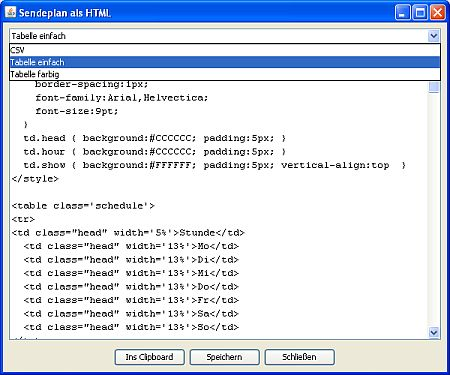

HTML oder CSV erzeugen
Station Admin kann Dir für Deinen Sendeplan HTML-Code erzeugen den Du in Deine Homepage übernehmen kannst. Auch ein Export im CSV-Format ist möglich. Klicke dazu im Sendeplan-Fenster auf . Es öffnet sich ein Fenster wo Du oben ein Template auswählen kannst. Im Textfeld darunter wird dann der zugehörige Code angezeigt. Diesen kannst Du ins Clipboard kopieren oder in eine Datei speichern.
Standardmäßig bietet Station Admin die folgenden Optionen an:
Eigene Formate
Du möchtest Kleinigkeiten ändern oder ein eigenes Format für den Export definieren? Kein Problem: Gehe in das Verzeichnis in das Du Station Admin installiert hast und schaue dort ins conf/-Verzeichnis. Dort findest Du diverse .vm-Dateien die die Templates für die Generierung von HTML & Co enthalten. Diese .vm-Dateien enthalten Apache Velocity-Templates.
Erstelle eine Kopie der Datei die Du anpassen möchtest - Änderungen in der Originaldatei sind keine gute Idee weil die mit dem nächsten Station Admin-Update verloren gingen - und bearbeite die Datei in einem Texteditor. Die Templates sind im Grunde normale Textdateien mit ein paar Schleifen und Variablen - wer über Grundkenntnisse in der Programmierung verfügt sollte das verstehen können.
Nach einem Neustart von Station Admin solltest Du die neue Datei als Option beim Exportieren sehen.
Die Dateien wie sie mit Station Admin mitgeliefert werden sind zugunsten eines lesbaren HTML-Codes zugegebenmaßen ziemlich grausam formatiert. Hier findest Du eine lesbarere und kommentierte Fassung für die einfache HTML-Tabelle.